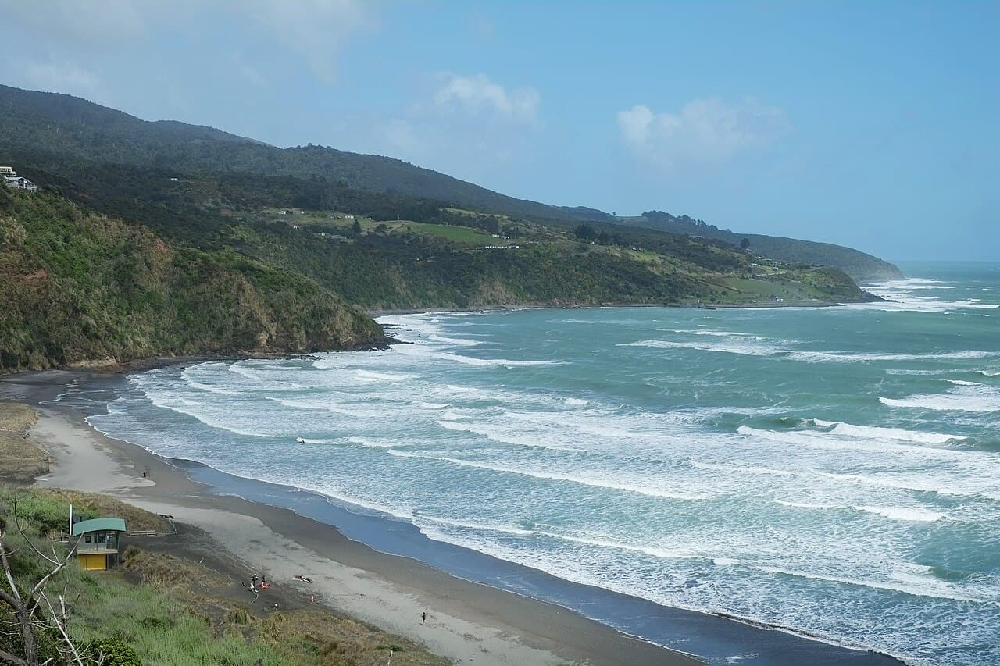

Raglan — Manu Bay
Nouvelle-Zélande · surf

L'une des plus longues gauches du monde, point break parfait popularisé par le film « Endless Summer ».
- Lieu
- Nouvelle-Zélande
- Niveau
- Intermédiaire
- Activités
- surf
- Type d'eau
- Mer / océan
- Coordonnées
- -37.82, 174.79 (position approximative du secteur)
Dangers à connaître
- Fond rocheux.
- Eau fraîche.
Le conseil d'Ocean Buddy
Gauche interminable et régulière ; combinaison conseillée.
Ouvrir dans Ocean Buddy Télécharger sur l'App Store
Source : Description historique Ocean Buddy · vérification externe en attente.